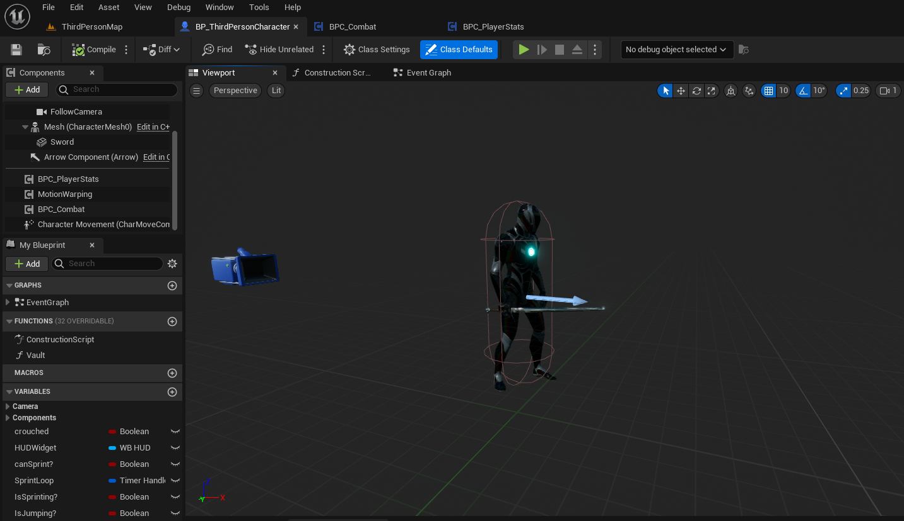
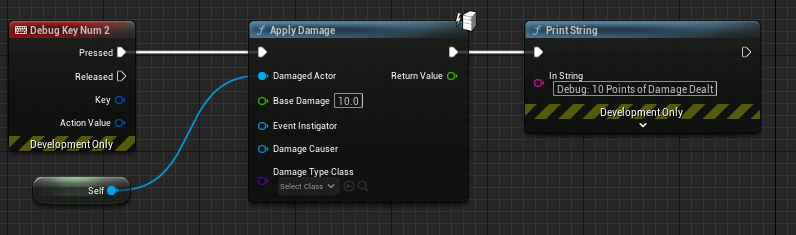
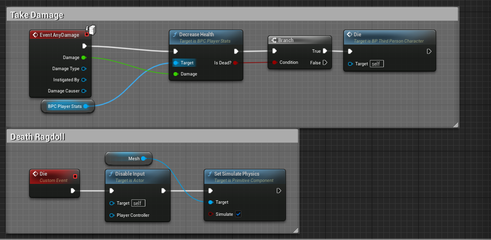
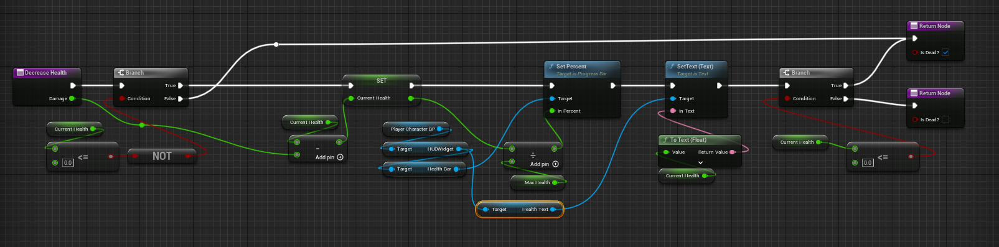

Here I am documenting the process of learning UE5 and building a space sim with survival mechanics. I have begun prototyping many of the core mechanics the game will be built on, including but not limited to movement, combat, leveling up stats, and flying ships.
The game I plan to build will be expansive, yet simple and straightforward, which will allow for expansive depth of intertwined systems structured around solid gameplay loops. As someone with a considerable amount of experience with similar games in the genre, I intend to learn from both the successes and failures of other ambitious developers.
My game will draw a heavy inspiration from Sci-Fi genre classics like Star Wars and Star Trek and design philosophies from games such as Star Citizen, No Man's Sky, Minecraft, Ark: Survival Evolved, and Valheim. My goal is to design a game that combines the best features and design philosophies of these games, while avoiding many of the pitfalls that plague them.
I hope you will stay tuned as I work to bring my dream game into reality, I want to build a game that first and foremost, I would actually enjoy to play myself while writing a love letter to the Science Fiction genre.
As I don't yet have any of the final assets that will make it into the game, I have decided to use a free X-Wing model from sketchfab to prototype my flight mechanics.
Can currently control Pitch, Yaw, Roll, and Forward Thrust; I plan to eventually implement full 6 Degrees of Freedom similar to Star Citizen's omni directional ship thrusters.
Using the default Unreal mannequin I have created simple mechanics enabling fluid movement.
Can crouch, sprint, jump, and attack. Currently only sprinting consumes stamina, which will regen passively while not sprinting. Attacking currently follows a 3 hit combo system.
I have created an object called BP_ThirdPersonCharacter. I have also made two additional objects BPC_Combat and BPC_PlayerStats that I have attached to the ThirdPersonCharacter object.
The combat component enables the 3 hit combo string by creating custom events. A custom event is created for each individual attack in the combo. An integer switch determines which event is used and each event increments the combo index to the next attack up until the last attack where it resets to zero. It also resets to zero if the player stops inputting attacks for long enough.
The stat component allows me to create stat based logic for the player character, such as sprinting requiring stamina, XP required per level scaling with level, or player death upon running out of health. By creating variables to store data and functions to access those variables, it is possible to allow other game objects to make changes to the player characters stats.
By creating a debug key on my player to call the 'Apply Damage' helper function to the player object, I can simulate taking damage and eventually dying once health reaches zero.
The 'Apply Damage' helper function triggers another event on my character's event graph, 'AnyDamage' which itself calls the 'Decrease Health' function of my stat component before checking a boolean conditional to evaluate if the player should be dead. If the condition evaluates to true, the 'Die' function is called which disables player input and ragdolls the physics mesh.
The 'Decrease Health' function itself subtracts the passed through incoming damage value from the current health value and evaluates if the 'IsDead?' boolean condition should be set to true. It also handles properly displaying and updating the values in the HUD elements.
